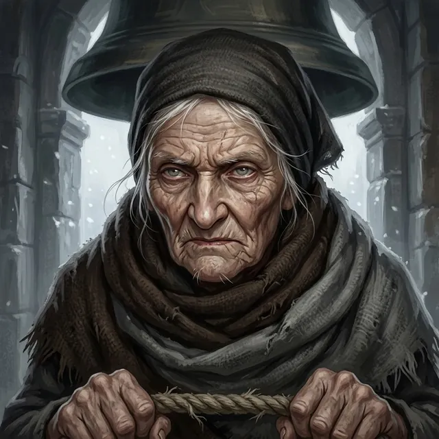

Sister Pell
Keeper of the bells of Saint Ysolde's
Only what the story has shown so far.
Appearance
Keeper of the House's bells for fifty years, and so old she might have been cut from the hearthstone: small, wrapped in two shawls, with knuckles swollen like walnuts. Her face is grey and furrowed all over, the mouth a thin flat line, a few white whiskers on the chin, pale grey eyes narrowed under sparse white brows, and wisps of white hair escaping a dark wool kerchief; the shawls are one brown and one faded grey, wrapped high. She watches a speaker's mouth rather than their eyes, and her voice is a dry rasp, rationed. Her glass stands in the bell tower.
Now
Last seen Chapter 1 · Scene 3 — The Law of Bells · Saint Ysolde's
Keeper of the House's bells. Asked by Mother Ione whether she would ring Old Mercy every dawn and every dusk for as long as the grey cloaks care to sit at the foot of the Steps, she said she had rung the bells fifty years and the Prior could ask the bell if it was tired. When the grey cloaks were at the bars and Wren ran for the tower, Old Mercy rang late and dragging, after two of them were already through the wicket, and Wren came back with Pell's slowness in her face. The Confessor told the Prior she keeps a fine bell, a little slow on the rope.
Story so far
Her glass in the bell tower is where the grey cloaks were first seen on the Holloway. At Mother Ione's council in the warming room she sat by the fire in two shawls and said Old Mercy rings only when the House is keeping somebody, and once rung the law has lapsed twice, both for snow, never on her rope; asked whether she would ring Old Mercy dawn and dusk for as long as the grey cloaks wait, she said she had rung the bells fifty years, and the Prior could ask the bell if it was tired.
Quote
Fifty years I've rung the bells. Ask the bell if it's tired.
Relationships
- Wren AshdownWren used her glass
Wren watched the Holloway through Sister Pell's glass from the bell tower and carried the news of the riders down to the hall.
The Reckoning
Level 4 · Bound
Ember low
Arts ⟦ unread ⟧
Deeper ⟦ unread ⟧
Read with Warden's Eye II. Stronger sight reads deeper. The ranks of the Ember run Bound · Kindled · Tempered and up; Oathsworn is borrowed strength.
Known facts
What the page has shown (7)
- Her glass is in the bell tower of Saint Ysolde's; it was through Sister Pell's glass that Wren saw the riders on the Holloway.Chapter 1 · Scene 1 — The Reading of the Knots
- What the glass showed: six riders and a cart on the Holloway, grey cloaks, and a censer smoking in the snow, which Hollis named Confessors.Chapter 1 · Scene 1 — The Reading of the Knots
- She has rung the House's bells for fifty years.Chapter 1 · Scene 3 — The Law of Bells
- Old Mercy rings only when the House is keeping somebody, dawn and dusk till they are gone; once it has been rung, she says, the law has lapsed twice, both times for snow, and not on her rope.Chapter 1 · Scene 3 — The Law of Bells
- She watches the speaker's mouth, not their eyes; when she set her cup on the hearth it chattered twice on the stone before it settled.Chapter 1 · Scene 3 — The Law of Bells
- She lent Wren her glass counted out, one glass, two caps and one strap, to be counted back by the next bell.Chapter 1 · Scene 4 — Boots on the Board
- When Wren ran for the tower, Old Mercy came up out of it late and dragging, as if the rope had argued with the hands that found it, after two grey cloaks were already through the wicket; Wren came back with Pell's slowness in her face.Chapter 1 · Climax — The Law of Names